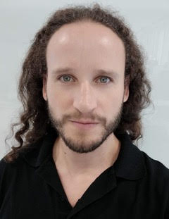

Steering Committee
Christos Bouganis (Imperial College London)
Nic Lane (Samsung AI, UK & University of Cambridge)
Ilias Leontiadis (Meta Research, UK)
Program Committee Chairs
Stefanos Laskaridis (Samsung AI, UK)
Stylianos I. Venieris (Samsung AI, UK)
Qing Wang (TU Delft, NL)
Program Committee
Robert Mullins (University of Cambridge)
Matt Welsh (OctoML)
Nirvana Meratnia (Eindhoven University of Technology)
Alexandros Kouris (Samsung AI, Cambridge)
Urmish Thakker (SambaNova Systems)
Nele Mentens (Universiteit Leiden)
Dimitris Chatzopoulos (University College Dublin)
Maria Gorlatova (Duke University)
Jy-yong Sohn (University of Wisconsin-Madison)
Jona Beysens (CSEM, CH)
Shiqiang Wang (IBM Research, USA)
Yunxin Liu (AIR, Tsinghua University)
Lin Wang (VU Amsterdam)
Shuochao Yao (George Mason University)
-
Keynote Speakers

Maria Gorlatova
Duke University Nikolas Kourtellis
Telefonica Research - Paper Submission Deadline:
April 8th - 11:59PM AOE
April 22nd - 11:59PM AOE (Final) - Workshop Event:
July 1st 2022
Call for Papers [PDF]
Committees
Keynote Talks
Attendee Information
Technical Program
Prior Workshops
Submissions
Important Dates